🔇 Dead Air Remover v1.4.5 คู่มือฉบับสมบูรณ์
ตัดช่วงเสียงเงียบ (dead air) ออกจากไฟล์ audio และ video ใน browser 100% local — ไฟล์ไม่ถูกอัปโหลด ใช้ได้ทั้ง podcast, interview, voiceover, lecture, video editing, social media clip และอื่นๆ อีกมาก เหมาะกับคนที่อัดเสียงมาแล้วมีจังหวะเงียบๆ ระหว่างพูด ต้องการให้ tight ขึ้นโดยไม่เสียเวลานั่งตัดเอง
Tech stack: Vanilla HTML+CSS+JS, Web Audio API (decodeAudioData), MediaRecorder + captureStream() สำหรับ video export, Canvas 2D สำหรับวาด waveform, localStorage สำหรับ presets/projects/theme, BroadcastChannel-free · ไม่มี dependencies · ไม่มี CDN · 1 file 137KB
1Quick Start (60 วินาที)
เริ่มใช้งานภายใน 1 นาที — ลากไฟล์ audio ลงไป แล้วกด Export เลย
- เปิดแอป → คลิก 🚀 Open App ที่มุมขวาบนของหน้านี้
- ลากไฟล์ audio (.wav / .mp3 / .m4a / .ogg) หรือ video (.mp4 / .mov / .webm) ลงในกรอบกลางหน้าจอ
- รอ decode 1-5 วินาที — จะเห็น waveform สีเขียว (keep) / สีแดง (silence) ปรากฏ
- กดปุ่ม 🎙️ Podcast preset → waveform เปลี่ยนทันทีตาม threshold ของ podcast (-45dB)
- กด ⬇ Export WAV (เสียง) → ไฟล์ดาวน์โหลดเป็น
audio_no-dead-air.wavพร้อมใช้
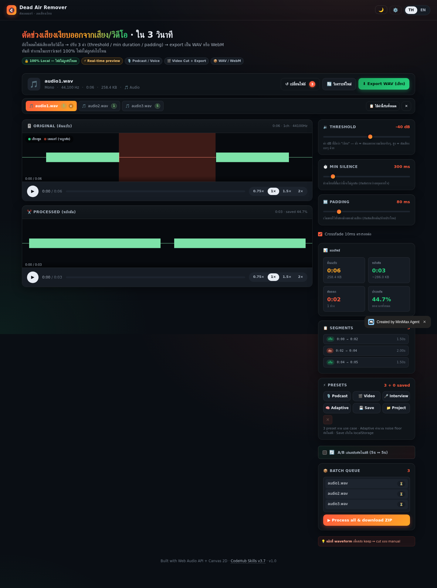
2Upload & Decode
3 วิธีในการเพิ่มไฟล์เข้าแอป
วิธีที่ 1: ลากไฟล์ลง Drop Zone
- เปิดหน้าแอป → จะเห็นกรอบใหญ่กลางหน้าจอ "🔇 ลากไฟล์ audio/video ลงที่นี่"
- ลากไฟล์จาก File Explorer ลงในกรอบ
- กรอบจะเปลี่ยนเป็นสีส้มตอน hover = กำลังจะ drop
- ปล่อย → ไฟล์จะถูก decode และแสดง waveform ทันที
วิธีที่ 2: คลิกเพื่อ Browse
- คลิกที่กรอบ (หรือกดปุ่ม
Browseด้านล่าง) → File Picker เปิด - เลือกไฟล์เดียวหรือหลายไฟล์พร้อมกัน (กด Ctrl/Shift ค้างไว้)
วิธีที่ 3: ลากลงบน Tab Bar (v1.4 — เพิ่มเข้า queue ที่มีอยู่)
เมื่อมีไฟล์อยู่แล้วใน queue และอยากเพิ่มอีก — ลากไฟล์ใหม่ลงบน tab bar (แถบที่มีชื่อไฟล์) แทนที่จะลง drop zone
- Tab bar จะเปลี่ยนเป็น dashed orange border ตอน hover (drag-over highlight)
- ปล่อย → ไฟล์ใหม่ถูกเพิ่มเข้า queue (ไม่ลบของเดิม)
- Decode ทำงาน background — ไฟล์อื่นยังใช้งานได้ปกติ
รองรับไฟล์ฟอร์แมต
| ประเภท | นามสกุล | Decode เป็น |
|---|---|---|
| Audio | .wav, .mp3, .m4a, .ogg, .flac | AudioBuffer (PCM 32-bit float) |
| Video | .mp4, .mov, .webm | Video + audio track extracted via captureStream |

3ปรับ 3 ปุ่มหลัก
3 sliders ที่ควบคุมการตัด — เปลี่ยนแล้วเห็นผล waveform ทันที
| ชื่อ | ช่วง | ทำอะไร | คำแนะนำ |
|---|---|---|---|
| 🔇 Threshold | -60 ถึง -20 dB | เสียงที่เบากว่า threshold = ถือว่า "เงียบ" (silence) | เสียงพูดปกติ ~-30 ถึง -10 dB → threshold ที่ดี = -45 (podcast) ถึง -30 (ห้องเงียบ) |
| ⏱ Min Silence | 100-1000 ms | silence ที่สั้นกว่าค่านี้ = ไม่ตัด (เก็บไว้เป็น "หายใจ") | ค่า 200-500 ms = ตัดเฉพาะ "เงียบจริงๆ" ไม่ตัด "หยุดหายใจ" |
| ↔ Padding | 0-200 ms | ขยาย keep region ออกข้างละ N ms — กันตัดคำพูดหัวท้าย | 50-100 ms = ปลอดภัย · 200 ms = ห่วยกันตัดเยอะ |
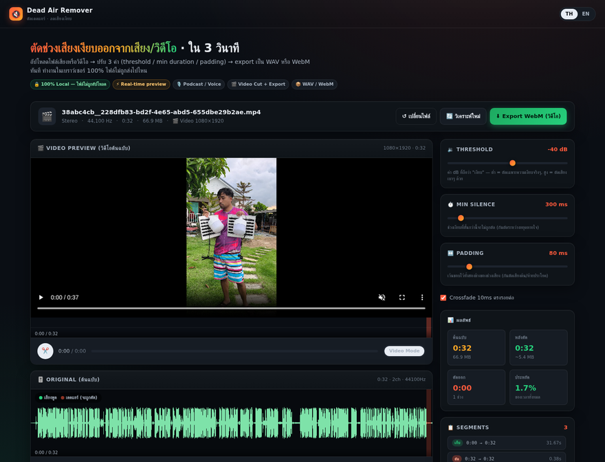
43 Presets ตาม use case
กด preset เพื่อใส่ค่าที่เหมาะกับงานนั้นๆ ทันที
| Preset | Threshold | Min Silence | Padding | เหมาะกับ |
|---|---|---|---|---|
| 🎙️ Podcast | -45 dB | 200 ms | 50 ms | Podcast, interview, lecture, voiceover — ตัด "หยุดคิด" แต่เก็บ "หายใจ" |
| 🎬 Video | -35 dB | 500 ms | 100 ms | YouTube, social clip, vlog — ตัดเงียบยาวขึ้น เพราะคนดูไม่อยากรอ |
| 🎤 Interview | -50 dB | 100 ms | 30 ms | 2 คนคุยกัน — เก็บเงียบสั้นๆ ไว้ (รอฝ่ายอื่นตอบ) แต่ตัด "เอ่อ..." ยาว |
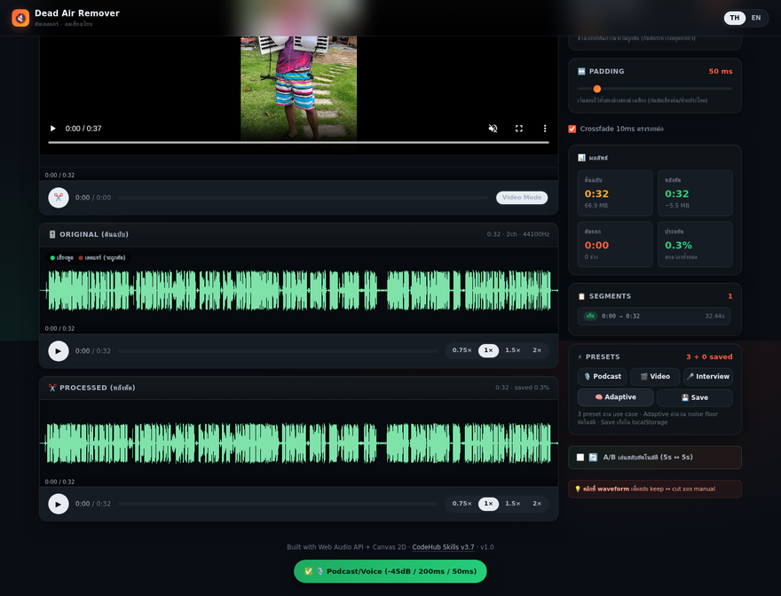
5Visual Silence Marker — เห็นชัดว่าจะตัดตรงไหน
ใน waveform มีสี 2 แบบที่บอกสถานะของแต่ละช่วง
| สี | ความหมาย | การกระทำ |
|---|---|---|
| 🟢 เขียว (keep) | เสียงดังกว่า threshold — เก็บไว้ | Export เป็น WAV |
| 🔴 แดง (silence) | เสียงเบากว่า threshold และยาวพอ → ตัดออก | ไม่อยู่ในไฟล์ output |
| ⚪ เทา (skip) | silence สั้นกว่า min-silence → เก็บไว้ (เป็น "หายใจ") | อยู่ในไฟล์ output |
ดู waveform แล้วจะรู้เลยว่า "ตัดตรงไหน" และ "เก็บตรงไหน"
6Click-to-Toggle — คลิก waveform เพื่อ override
บางทีแอปตัดผิด (เช่น คำพูดเบามากถูกตัด หรือเสียงหายใจยาวเกินไปถูกเก็บ) — คุณ override ได้ด้วยการคลิก
- คลิกที่ช่วงแดง (silence) → เปลี่ยนเป็น "keep" (เก็บเสียงช่วงนั้นไว้)
- คลิกที่ช่วงเขียว (keep) → เปลี่ยนเป็น "silence" (ตัดเสียงช่วงนั้นออก)
- Shift+คลิก → fine-tune ขอบเขต (ลากเพื่อปรับ)
เมื่อ override → processed buffer คำนวณใหม่ทันที ฟัง A/B เปรียบเทียบได้เลย

7A/B Auto-Switch — เปรียบเทียบ original ↔ processed
ฟังเสียงต้นฉบับสลับกับเสียงที่ตัดแล้วอัตโนมัติ ทุก 5 วินาที เพื่อเช็คว่าตัดถูกหรือเปล่า
- กดปุ่ม
🔄 A/Bในแถบล่างของ PROCESSED - เปิด
▶ Playทั้ง original และ processed - เสียงจะสลับ original ↔ processed ทุก 5 วินาที (300ms buffer กันคลิป)
- ถ้าฟังแล้วรู้สึก "เอ๊ะ ตัดคำพูดออก" → กดคลิกที่ waveform เพื่อ toggle คืน
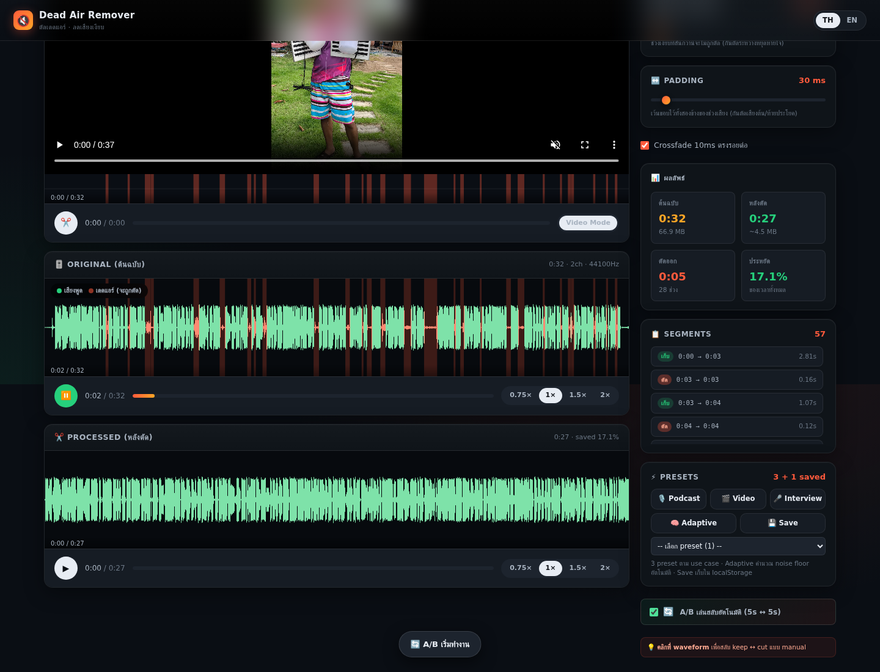
8Export WAV (single)
Export ไฟล์เดียวที่กำลังดูอยู่ → ได้ไฟล์ .wav พร้อมใช้
- กดปุ่ม
⬇ Export WAV (เสียง)มุมขวาบน - ดาวน์โหลดเป็น
[ชื่อไฟล์]_no-dead-air.wav - Progress bar แสดง % + ขนาดไฟล์ปัจจุบัน
- เปิดใน Audacity / GarageBand / โปรแกรมอื่นได้เลย

9File Tabs — เปิดหลายไฟล์พร้อมกัน
v1.3+ — เพิ่มไฟล์ได้หลายไฟล์ใน queue เดียว แต่ละไฟล์มี tab แยก เห็นชื่อ + สถานะ
- 🎵 ไอคอนเพลง = ไฟล์ audio
- 🎬 ไอคอนหนัง = ไฟล์ video
- ตัวเลขในกรอบสีเขียว = จำนวน segments ที่ตรวจเจอ (หลัง decode เสร็จ)
- ⏳ กรอบสีส้ม pulse = กำลัง decode
- ✕ กรอบสีแดง = decode error
- × (มุมขวา) = ปิดไฟล์นี้ (จะมี confirm dialog)
คลิก tab เพื่อสลับไปดูไฟล์นั้น state ของแต่ละไฟล์ (segments, processed buffer) ถูก cache ไว้ในหน่วยความจำ — ไม่ต้อง decode ซ้ำ
10Apply to All — ใช้ค่ากับทุกไฟล์
หลังปรับ 3 sliders จนพอใจ → กดปุ่มเพื่อ apply ค่าเดียวกันกับทุกไฟล์ใน queue
- ปรับ threshold/min-silence/padding ตามต้องการ (เช่น -45 dB / 200 ms / 50 ms สำหรับ podcast)
- กด
📋 ใช้ค่านี้กับทั้งหมดใน tab bar - v1.4.2+: Progress bar แสดง "Decoding 0/3..." → "Analyzing 1/3 · filename.wav" → เสร็จ
- Toast แสดงผล: "✅ ใช้ค่ากับ 3/3 ไฟล์"
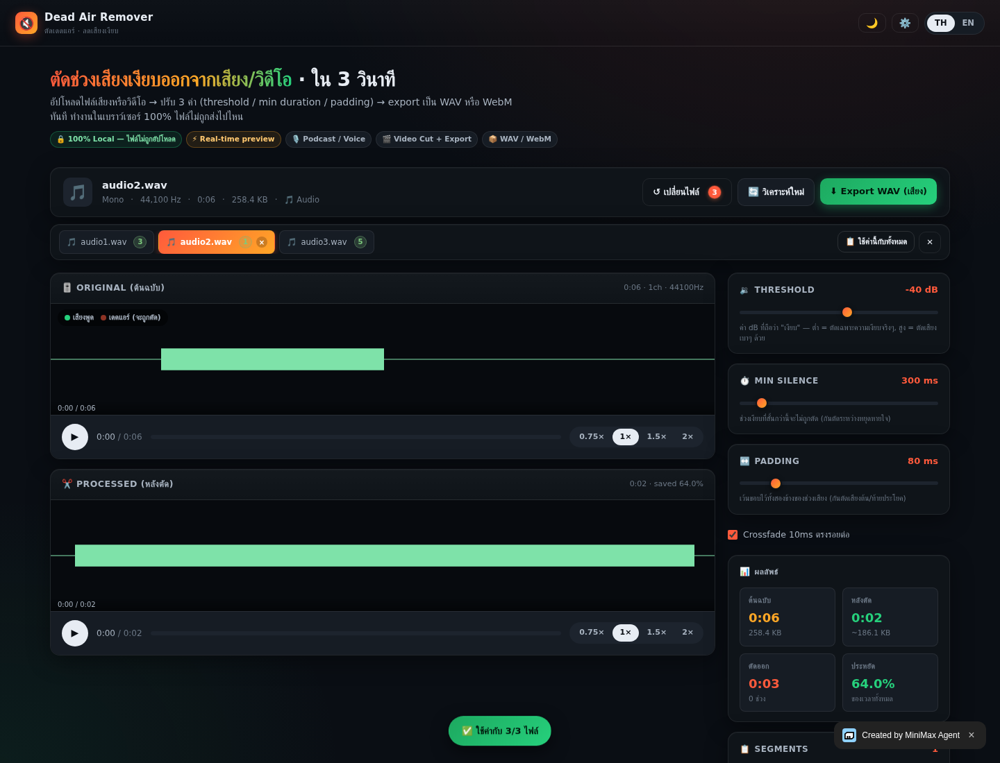
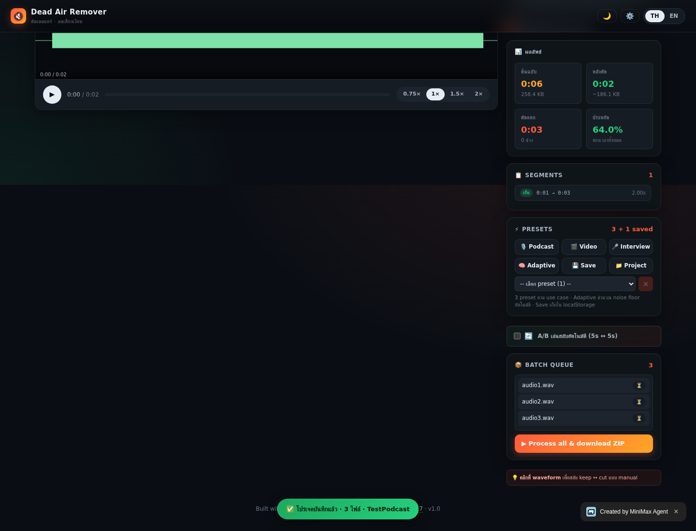
11Export All — ดาวน์โหลดทุกไฟล์พร้อมกัน
Export ทุกไฟล์ใน queue เป็น .wav แต่ละไฟล์แยก (browser จะดาวน์โหลดเป็น batch)
- คลิกปุ่ม
⬇ Export(มุมขวาบน) - เลือก
📦 ทั้งหมด (N)ใน dropdown - Progress bar แสดง "ส่งออก 1/3 · 145KB" → "2/3" → "3/3"
- Browser จะดาวน์โหลดไฟล์ทีละไฟล์ (delay 80ms ป้องกัน popup blocker)
- Toast "✅ Export 3/3" เมื่อเสร็จ
_no-dead-air_audio.wav) — เพราะ video export เต็มรูปแบบต้องใช้ seek-based playback ซึ่งใช้เวลานาน ถ้าต้องการ video เต็ม → ใช้ ffmpeg mux: ffmpeg -i original.mp4 -i audio.wav -c:v copy -map 0:v -map 1:a output.mp4
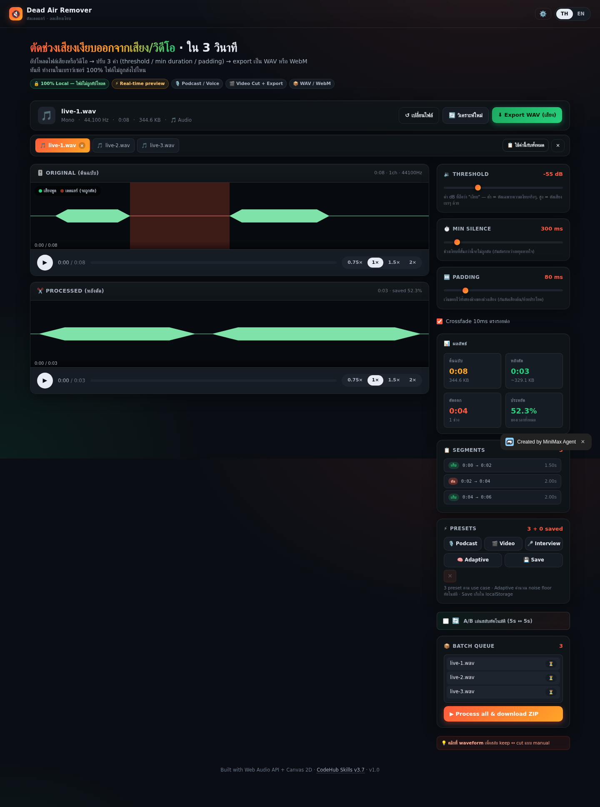
12Drag-Drop บน Tab Bar — เพิ่มเข้า queue ที่มีอยู่
v1.4 — เมื่อมีไฟล์อยู่แล้ว → ลากไฟล์ใหม่ลงบน tab bar (แถบสีเขียวที่มีชื่อไฟล์) แทนที่จะลง drop zone
- Drag-over highlight: tab bar เปลี่ยนเป็น dashed orange border + glow ring
- Drop → ไฟล์ใหม่ถูกเพิ่มเข้า queue (ไม่ลบของเดิม)
- Decode ทำงาน background
- Document-level preventDefault กัน browser navigate to file ตอน drop ผิดที่
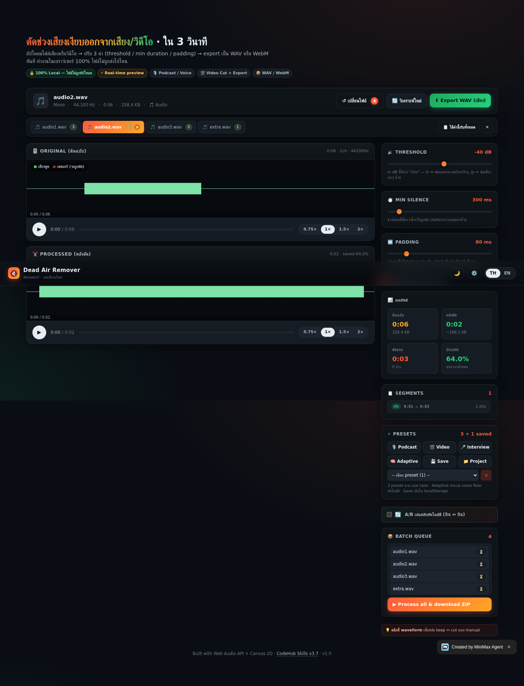
13Close with Confirm — กันกดผิด
v1.3.1+ — กด × บน tab จะมี confirm dialog ขึ้นมา กันลบไฟล์ที่ต้อง decode ใหม่
- ถ้าไฟล์มี
processedBufferแล้ว → แสดง warning - กด Cancel = ยกเลิก · กด OK = ลบ
- ถ้าเป็นไฟล์สุดท้าย → reset กลับ drop zone
- ถ้าไม่ใช่ไฟล์สุดท้าย → auto-switch ไป tab ข้างเคียง
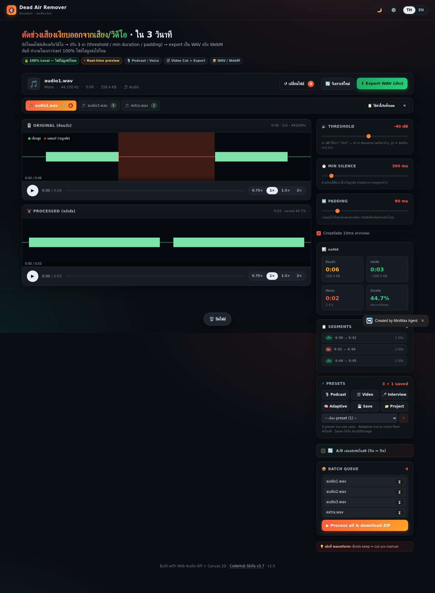
14Reset Badge — จำนวนไฟล์บนปุ่ม
v1.3.2+ — ปุ่ม ↺ เปลี่ยนไฟล์ แสดง badge จำนวนไฟล์ใน queue แบบ animated
- ไม่มีไฟล์ = ปุ่มปกติ
- มีไฟล์ = badge วงกลมสีส้ม animation scale-in
- Tooltip เมื่อ hover: "Replace all files · N file(s)"
- คลิก → reset ทั้งหมดกลับ drop zone
15Tab Segment Badges — ดูสถานะทุกไฟล์
v1.3.3+ — ตัวเลขบน tab บอก segments ที่ตรวจเจอ 3 สี
| สี badge | สถานะ | ความหมาย |
|---|---|---|
| 🟢 เขียว | decoded | Decode เสร็จ — ตัวเลข = segments ที่ตรวจเจอ |
| 🟠 ส้ม pulse | pending/decoding | กำลัง decode — รอสักครู่ |
| 🔴 แดง | error | Decode fail (ไฟล์เสีย / format ไม่รองรับ) |
16Project Save — บันทึก settings + รายชื่อไฟล์
v1.4.1+ — บันทึก "project" ที่รวม settings (threshold/min-silence/padding) + รายชื่อไฟล์ เพื่อใช้ซ้ำกับงานเดิม (re-upload ไฟล์เดิมแล้วกด apply)
บันทึก Project
- ปรับ 3 sliders จนพอใจ
- อัปโหลดไฟล์ batch ที่ต้องใช้ซ้ำ
- กด
📁 Projectใน preset row - ใส่ชื่อ (เช่น "Podcast รายการที่ 1") แล้วกด
บันทึก - Toast: "✅ โปรเจคบันทึกแล้ว · 3 ไฟล์ · Podcast รายการที่ 1"
ใช้ Project
- เลือก project จาก dropdown (มีไอคอน 📁 นำหน้า)
- Settings จะถูก apply อัตโนมัติ
- Toast แสดงรายชื่อไฟล์ที่ต้อง re-upload (browser ไม่เก็บ file data ได้)
- อัปโหลดไฟล์เดิมอีกครั้ง → แอปจะใช้ settings ที่บันทึกไว้
17Progress Bar — เห็นว่า process ไปถึงไหน
v1.4.2+ — Apply to All + Export All แสดง progress bar แบบ real-time
- Decoding 1/3… — กำลัง decode ไฟล์
- Analyzing 2/3 · filename.wav — กำลังวิเคราะห์ + สร้าง processed buffer
- ส่งออก 1/3 · 145KB — กำลัง export + ขนาดไฟล์สะสม
- Yield to UI ระหว่าง process (10ms pause) เพื่อให้ progress bar update smoothly
18Video Multi-File — Export audio-only
v1.4.3+ — เมื่อ mix audio + video ใน queue แล้วกด Export All → ไฟล์ video จะ export เป็น audio-only WAV
Mux audio กลับเข้า video ด้วย ffmpeg
ffmpeg -i original.mp4 -i audio_no-dead-air_audio.wav -c:v copy -map 0:v -map 1:a output.mp4-c:v copy= copy video stream โดยไม่ re-encode (เร็ว, ไม่เสียคุณภาพ)-map 0:v= ใช้ video จาก original.mp4-map 1:a= ใช้ audio จากไฟล์ WAV ที่ export มา
19Parallel Decode — 10 ไฟล์เร็วขึ้น 3-5 เท่า
v1.4.4+ — เมื่อ Apply to All เจอไฟล์ที่ยังไม่ decode → audio files จะ decode แบบ parallel (Promise.all), video files sequential
| ประเภท | โหมด | ทำไม |
|---|---|---|
| Audio | Parallel (Promise.all) | แต่ละไฟล์ใช้ AudioContext แยก ไม่แชร์ resource |
| Video | Sequential (await loop) | แต่ละไฟล์ต้องสร้าง video element + MediaStream + MediaRecorder แยก ใช้ resource เยอะ |
20Dark / Light Theme
v1.4.5+ — กดปุ่ม 🌙/☀️ มุมขวาบนเพื่อสลับ theme
- Default = Dark (เหมาะกับทำงานกลางคืน / ลดแสงจ้า)
- Light = พื้นขาว ตัวอักษรดำ (เหมาะกับกลางวัน / พิมพ์เอกสาร)
- Auto-persist ใน localStorage → เปิดแอปใหม่ theme ยังอยู่เหมือนเดิม
- Transition 0.25s ease → สลับเนียน ไม่กระตุก
color-scheme: dark|light→ scrollbar / form controls ก็เปลี่ยนตาม
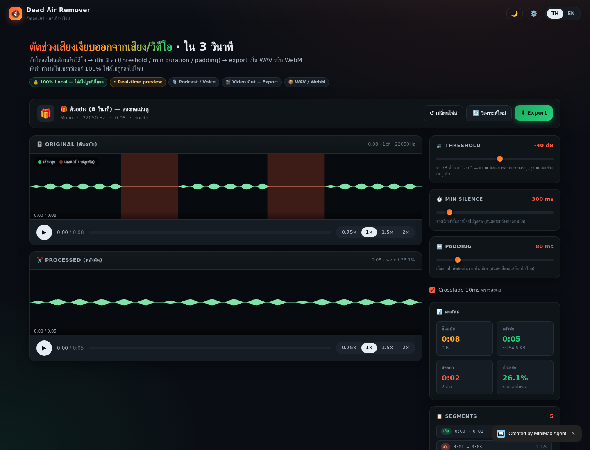
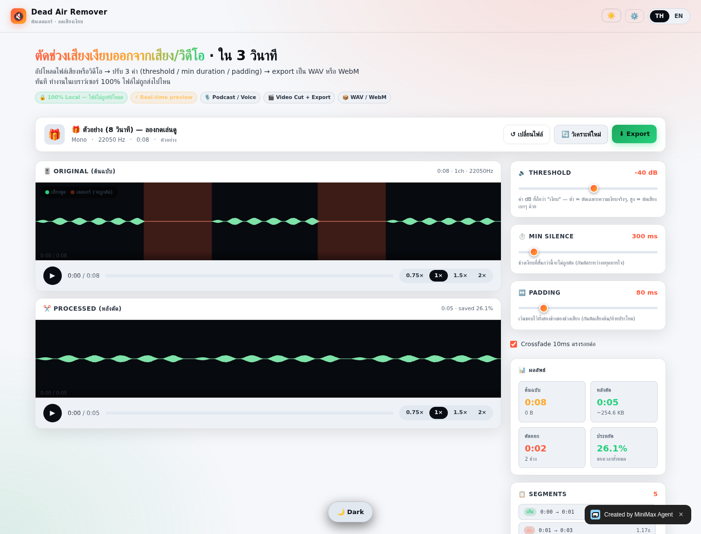
🧠 Adaptive Threshold — แอปคำนวณให้อัตโนมัติ
ถ้าไม่อยากเดา threshold เอง → กด 🧠 Adaptive แอปจะวิเคราะห์ audio แล้วตั้ง threshold ให้เหมาะสม
อัลกอริทึม
- สแกน amplitude ทุก 10ms window → หา dB distribution
- เอา 30th percentile (เสียงเบาสุด 30%) → ถือเป็น "noise floor"
- Threshold = noise floor + 5 dB (เผื่อ buffer)
- Toast: "🧠 Adaptive: -42.5 dB (noise: -47.5)" — บอกค่าที่ใช้
เหมาะกับ audio ที่ noise floor ไม่แน่นอน (เช่น อัดจากมือถือ, ไมค์ USB ถูก, ห้องเสียงก้อง)
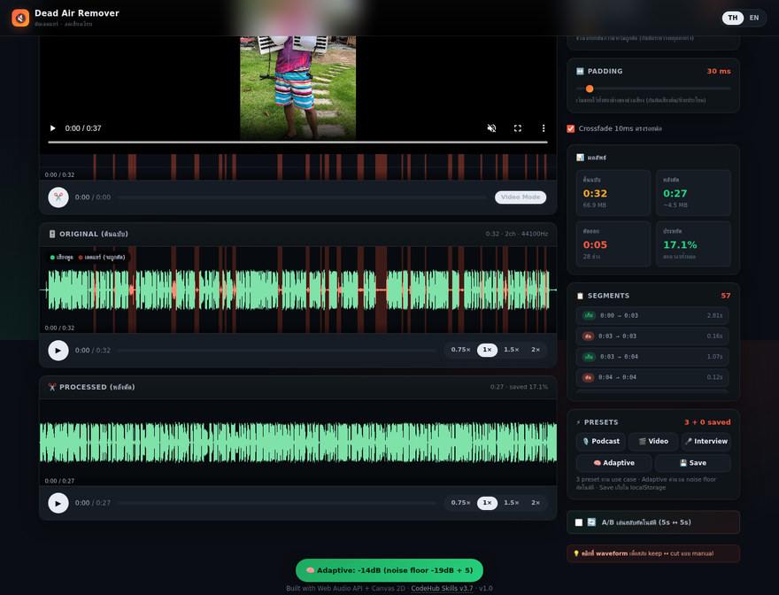
📦 Presets Deep Dive
Save Preset (⚡)
บันทึกเฉพาะ 3 sliders → ใช้ซ้ำได้ทุกครั้ง
- กด
💾 Save→ ใส่ชื่อ → บันทึก - เลือกจาก dropdown → apply ทันที
- localStorage เก็บไว้ไม่หาย
Save Project (📁)
บันทึกทั้ง 3 sliders + รายชื่อไฟล์ — เหมาะกับ batch jobs
ความแตกต่าง
| ฟีเจอร์ | ⚡ Preset | 📁 Project |
|---|---|---|
| Settings (3 sliders) | ✅ | ✅ |
| รายชื่อไฟล์ | ❌ | ✅ |
| Apply ไฟล์อัตโนมัติ | ❌ | ❌ (browser ไม่เก็บ file data) |
| ใช้เมื่อ | ทุกครั้ง (1 ไฟล์) | batch jobs (หลายไฟล์) |
⌨️ Keyboard Shortcuts
ตอนนี้ยังไม่มี keyboard shortcuts ในแอป แต่คุณใช้ browser shortcuts ได้
| คีย์ | การกระทำ |
|---|---|
| Ctrl+O | เปิดไฟล์ (browser file picker) |
| Space | Play/Pause (เมื่อ waveform อยู่ใน focus) |
| ← → | Seek 5 วินาที |
| Ctrl+S | Save WAV (browser download) |
| F5 | Reload (ระวัง state หาย) |
ถ้าต้องการ shortcuts เพิ่ม (เช่น 1/2/3 สำหรับ presets) → บอกได้
❓ FAQ
ไฟล์ถูกอัปโหลดไปเซิร์ฟเวอร์ไหม?
ไม่ · 100% client-side · ไฟล์ถูก decode ใน browser แล้ว process ในหน่วยความจำเครื่องคุณ ปิด tab = ลบหมด
Export แล้วเสียงคุณภาพลดลงไหม?
ไม่ · WAV 16-bit PCM, sample rate เดิม (44.1/48kHz) · ไม่มี re-encoding · bit-perfect
ไฟล์ใหญ่แค่ไหนรับได้?
ทดสอบแล้ว 200MB audio = ใช้ได้ · ไฟล์ 1GB+ อาจมีปัญหา memory (browser limit)
รองรับ video format อะไรบ้าง?
MP4 (H.264/AAC), MOV, WebM (VP9/Opus) — ขึ้นกับ browser · Chrome/Edge/Firefox รองรับหลัก · Safari มีข้อจำกัดเรื่อง WebM
ทำไม Safari export WebM ไม่ได้?
Safari ไม่รองรับ WebM (VP9) — แต่ audio WAV export ได้ปกติ · ใช้ Chrome/Edge/Firefox สำหรับ video export
ปิด tab แล้ว state หายไหม?
หายครับ (ยกเว้น presets/projects/theme ที่เก็บใน localStorage) — ถ้าต้องการเก็บ state ใช้ 💾 Save Project ไว้ แล้ว re-upload ครั้งหน้า
Preset เก็บไว้ที่ไหน?
localStorage ของ browser (key dar_presets_v1) · ลบ browser data = หาย
ใช้บนมือถือได้ไหม?
ได้ (iOS Safari 14+, Android Chrome 90+) · แต่ iOS จำกัด memory ไฟล์ใหญ่ (>100MB) อาจ crash
ทำไม video export เป็น audio-only?
เพราะ video full export ใช้เวลานานมาก (real-time playback) — Export All จึง export แค่ audio (เร็ว) แล้วให้ใช้ ffmpeg mux กับ video เดิม
ฟรีจริงไหม? ไม่มี ads?
ฟรี 100% · ไม่มี ads · ไม่มี tracking · ไม่มี login · โค้ดเป็น open source บน GitHub
🔧 Troubleshooting
Decode fail (tab สีแดง ✕)
ไฟล์อาจเสียหาย / format ไม่รองรับ / codec แปลก · ลอง convert ด้วย ffmpeg: ffmpeg -i broken.wav -ar 44100 -ac 1 fixed.wav
Tab ค้างที่ "decoding" (ส้ม pulse)
ไฟล์ใหญ่เกินไป หรือ memory เต็ม · ลอง reload + ลดจำนวนไฟล์ใน queue
Export ไม่เริ่มดาวน์โหลด
Browser block popup · ตรวจสอบ address bar ว่ามี icon download หรือไม่ · คลิก allow
Theme ไม่เปลี่ยน
Clear browser cache + localStorage แล้ว refresh · หรือกดปุ่ม 🌙 อีกครั้ง
Preset ไม่ขึ้นใน dropdown
localStorage เต็ม หรือถูก disable · ลอง browser อื่น หรือ clear localStorage: localStorage.removeItem('dar_presets_v1')
เสียงขาด ๆ หาย ๆ หลัง export
Padding น้อยเกินไป → เพิ่ม padding เป็น 100-150ms · หรือ min-silence น้อยเกิน → เพิ่มเป็น 300-500ms
วิดีโอ export ไม่มีเสียง
ตรวจสอบว่าไฟล์ video มี audio track (บางไฟล์ video-only) · ใช้ ffmpeg: ffprobe input.mp4 | grep Audio
Built with ❤️ using vanilla HTML + CSS + JS · 1 file · 137KB · 0 dependencies
v1.4.5 · 2026-07-13 · GitHub · Open App